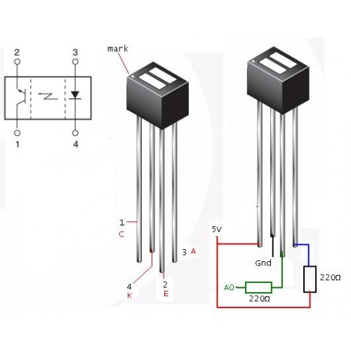
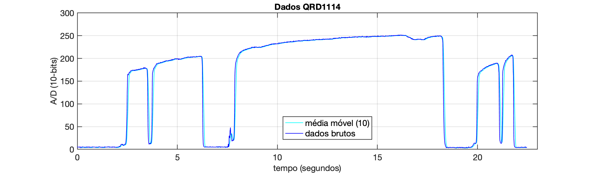
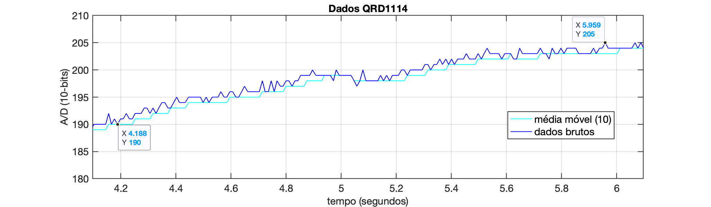
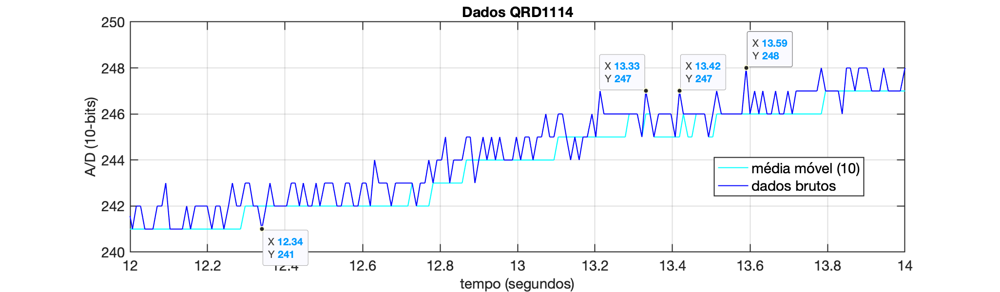

Sensor Pulsação - Teste #1
Usando foto-acoplador IR, QRD 1114 conforme mostrado na figura abaixo:

Dados: 30 Batimentos cardíacos 300 batidas (picos)/minuto → 0,5 5 Hz.
Taxa de Amostragem
Amostrar 20 pontos dentro do ciclo de uma senóide à 5 Hz → Hz ou segundos.
Ou amostrar 10 pontos por ciclo numa seóide à 5 Hz → Hz, o que impica numa taxa de amostragem de 0,02 segundosz.
Parte Eletrônica
Esquema elétrico proposto:

Código exemplo → QRD1114_teste1.ino:
x/*** Testando foto-acoplador QRD1114 como sensor de pulsação Fernando Passold, em 27/09/2024 Dado de entrada: valor lido na saída do QRD1114 (pino 2 = Emissor) que está em série com resistor de 220 Ohms conectado à entrada A0. 30 <= Batimentos cardíacos <= 300 BPM 0,5 <= f <= 5 Hz Amostrando 50 pontos em 5 Hz, resulta: fs = 50*5 = 250 Hz, T = 1/250 = 0,004 ****/// taxa de amostragem em msconst byte analogPin = A0; // pino (A/D) que recebe sinal analógico// const byte PIN_LED = 5; // Led à ser "controlado", no pino 5 (ou 6)int x; // Variável que contém a nova amostra lidaint y; // valor filtradoint samples[NUM_SAMPLES]; // Array para armazenar as últimas 10 amostrasint sampleIndex = 0; // Índice circular para o array de amostraslong sum = 0; // Soma das últimas 10 amostras (usando long para evitar overflow)int numSamplesCollected = 0; // Contador de amostras coletadasunsigned long time;void setup() { // put your setup code here, to run once: // pinMode(PIN_LED, OUTPUT); // digitalWrite(PIN_LED, LOW); // led inicia apagado Serial.begin(115200); // setup serial while (!Serial) { ; // Aguarda até que a porta serial esteja pronta - normalmente 10 ms } Serial.println(" "); Serial.println("Saída QRD1114: ");}void loop() { // put your main code here, to run repeatedly: // time = micros(); time = millis(); x = analogRead(analogPin); // *(5.0/1024.0); // converte para faixa 0 á 5 Volts sum -= samples[sampleIndex]; // Remove a amostra mais antiga da soma samples[sampleIndex] = x; // Armazena a nova amostra no array sum += x; // Adiciona a nova amostra à soma sampleIndex = (sampleIndex + 1) % NUM_SAMPLES; // Avança o índice circular // Conta o número de amostras coletadas até que tenhamos coletado 10 amostras if (numSamplesCollected < NUM_SAMPLES) { numSamplesCollected++; } // Calcula a média móvel continuamente y = sum / numSamplesCollected; Serial.print(time); Serial.print(" \t"); Serial.print(x); Serial.print(" \t"); Serial.println(y); delay(TS); // não garante período entre amostras de 4 ms... mas vamos tentar...}Usando o script em Python: capture_serial_data.py, obtemos o seguinte arquivo texto dados_capturados_1.txt resultando em algo como:
xxxxxxxxxxSaída QRD1114:0 6 610 5 520 5 530 5 541 5 552 5 562 5 572 5 582 5 594 5 5104 5 5114 5 5124 4 4...2452 33 152462 45 182473 60 232484 81 302494 123 412505 142 542515 161 692527 166 852537 163 992548 164 1132558 165 1272570 166 1392580 167 1492591 168 1582601 170 1632613 170 166...
Percebe-se que a taxa de amostragem não é exatamente os 10 mili-segundos requeridos.
Separando apenas os dados números no arquivo dados_1.csv, podemos com auxílio do Matlab, obter o seguinte gráfico:

Resultado de uma captura de 22,462 segundos, 2100 pontos.
Nota-se:
Vales com amplitudes muito baixas, quando não há um dedo sobre o sensor;

Vales com amplitudes maiores capturados com dedo encostado no sensor.

Nota-se neste último gráfico que não parece estar sobreposto uma "pulsação" sobre o sinal medido. Este circuito elétrico é de baixa sensibilidade para permitir detectar a pulsação. O resultado não varia muito mudando o foco da captura de dados para outra região:

Ou realizando um pouco mais de "zoom":

Este último gráfico permite tentar detectar a pulsação:
xxxxxxxxxx>> delta_t=13.42-13.33delta_t =0.09>> f=1/delta_t % pulsação em Hzf =11.111>> f*60 % pulsação em BPMans =666.67Nota-se uma frequência muito exagerada (incorreta).
Além de uma baixa variação de amplitude: [245, 247], apenas 2 passos (degraus) do conversor A/D de 10-bits. Uma variação muito baixa de amplitude. Cada passo (degrau) do A/D corresponde à mili-Volts; 2 passos resulta em variação de apenas 9,7656 mV.
Resultado das leituras: com taxa de amostragem de 10 ms:
- sem dedo: valores variando entre: 69 à 72;
- com dedo: valores variando entre: 228 à 260 (varia conforme posicionamento do dedo no sensor).
Conclusão: mudar a configuração elétrica usada com este sensor ou mudar de foto-acoplador!
Esta configuração elétrica parece mais adequada para medir proximidade (distância). Este circuito é mais sensível à aproximação do dedo ao sensor do que à variação de luminosidade na ponta do dedo causada pela pulsação.
>> Teste 2
Fernando Passold, em 27/09/2024